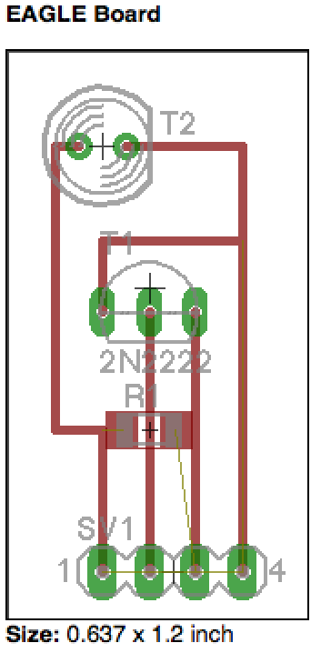
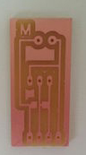
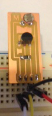
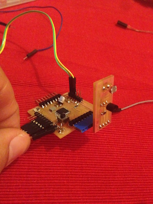
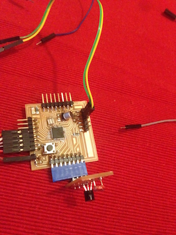

10 - Input devices
Intro
The assignment of this week was to create some boards to read from input devices. Indeed microcontrollers are able to operate upon information the need input devices to get data from the environment or from the user.
The Fabkit Board
I decided to make a board with a microcontroller, able to do generic purpose elaboration, and a shield (or daughterboard) to plug on it to connect input/output devices. I started from the Fabkit board, it has a ATMega 328P that is the same microcontroller used in the Arduino boards, with the advantage of having more pins and more memory that the Hello board that we already realized. You can find the design files and the BOM in the link provided. I milled the board on a FR-1 plate with the Roland SRM-20 with the procedure already described in the previous assignments.However as I want a faster board I used a 20MHz resonator instead of the 8 MHz one that is in the original design. Looking at the datasheet and at the ICSP pinout, I connected the MISO, MOSI, RESET, SCK, GND and VCC (app pin in the lower side of the board) of the board to the ICSP connector of the FabISP. As the FabISP doesn't provide power on the VCC pin I used the pin on the FTDI connector to power the board. I used an Arduino board without the microcontroller to have regulated +5V and to use the FTDI chip for the serial communication between the Fabkit board and the computer. I didn't follow the tutorial as it uses the 8MHz internal clock even if the board has a 20MHz resonator. To burn the bootloader and program the board I had to modify the boards.txt in the Arduino IDE. This file tell to the Arduino software the characteristics of the boards that you are going to program. So I changed the line
atmega168.build.f_cpu=16000000 to atmega168.build.f_cpu=20000000
in the definition of the Arduino Pro 5v. So I could burn the bootloader successfully. To test the board I wrote a little sketch to make the on-board led blink. I looked at a mapping of microcontroller pins to Arduino pins (figure below) and I made the led mounted on pin PB5 - PIN13 blink.

The sketch:
Designing the input board
I decided to design a shield that could snap on the Fabkit board (using headers) to do this I started from the pin on the Fabkit. As I wanted to connect a light sensor and a temperature sensor (both analog) I looked for pins with ADC (analog digital converter) The ADC can turn analog values to discrete values (from 0 to 1023). On the right side of the Fabkit we have this pins (Arduino names): VCC, GND, A5, A4, A3, A2,A1 and A0. To connect the two sensor I need VCC, GND and two pins with ADC. So I decided to make a shiel that connects to adiacent pins (VCC,GND,A5 and A4). The LDR is a resistance that changes its values according to the quantity of light that goes on its surface. Even if it is not accurate as a phototransistor it is cheap and useful for a quick and dirty light measurement. To connect the LDR i added a 10k resistor to create a voltage divider. The LDR is connected to the VCC and the resistor to ground so I have a "natural" behaviour as the number will increase with the light.
I decided to read the temperature using th LM35 sensor.

However using a float for the temperature value made the skech too big fot the ATTiny (4986Kb). So I used an int type and made other calculations in Processing.
To find the right temperature in Centigrades you have to use the formula temp = (5.0 * analogRead(tempPin) * 100.0) / 1024; or multiply the sensor value for 0.48828125.
It doesn't require any other components. So I designed the board with Eagle. However I did not find in the library the components I wanted to use. So I used other components with the same pinout: a phoresistor (2 pins) and a transistor (3 pins).

I had some problems because the holes exported by Eagle (even if the resolution was 2400 dpi) were too small (77px) to be recognized by the fabmodules. So I had to manually change the holes making it bigger (93px). The result was good:


As at the moment I didn't have female headers to put on the board I used a breadboard only for connections. I uploaded this sketch:Then, I connected the shield to the Fabkit and added a conditional statement to make the led on the board lights up at a certain threshold. I added the following code:
The code also write the values on the serial port. I used an Arduino board without the microcontroller to have regulated +5V and to use the FTDI chip for the serial communication between the board and the computer.
The shield connected to the board:


Downloads
- ©
 Attribution, non-commercial, share alike.
Attribution, non-commercial, share alike. - Design: HTML5 UP